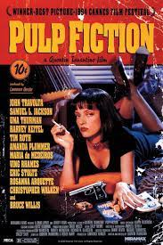
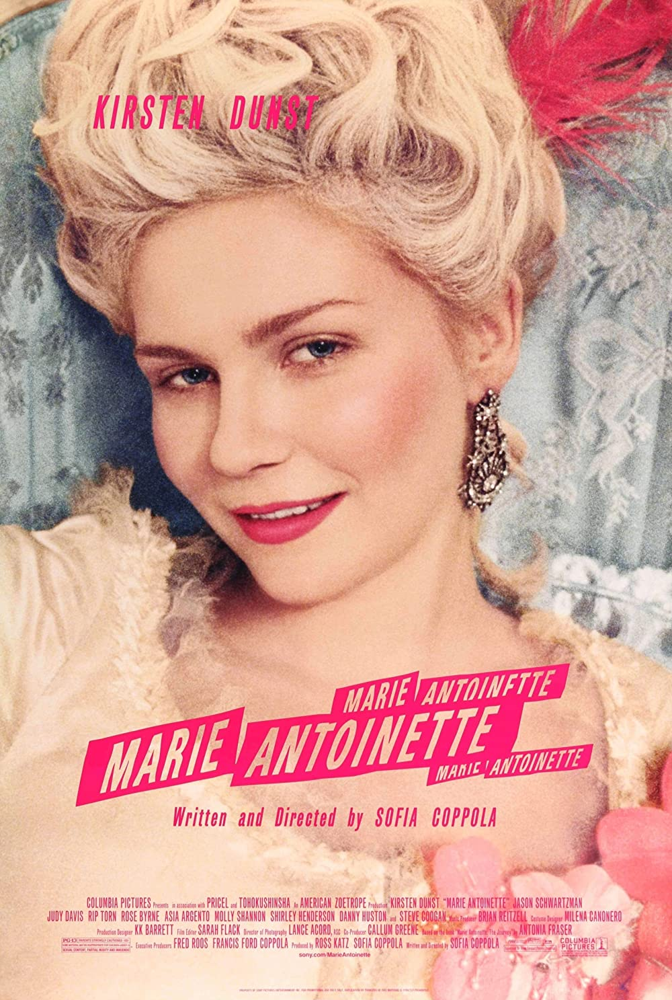

Cinema Dorado
"Lo bueno del cine es que durante dos horas los problemas son de otros."
refresca
contacto
horarios
sobre nosotros
NOVEDAD
THE MIRACLE CLUB
dir.: Thaddeus O'Sullivan.
estreno: Invierno 2023.
CARTELERA
ARGENTINA, 1985
dir.
: Santiago Mitre.

PULP FICTION
dir.
: Quentin Tarantino.

MARIE ANTOINETTE
dir.
: Sofia Coppola.
CASABLANCA
dir.
: Michaael Curtis.